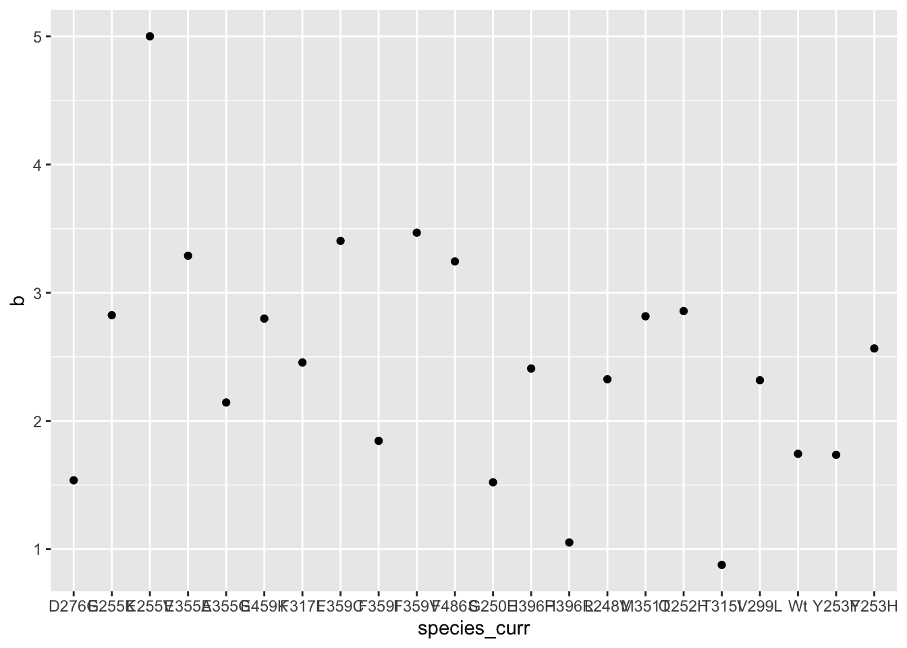
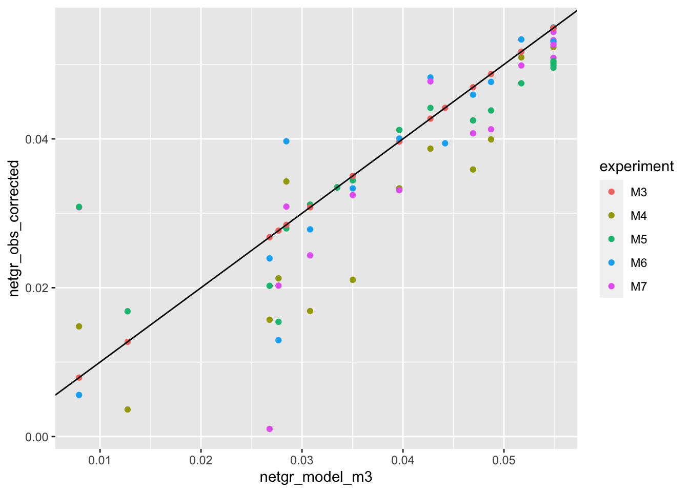

dosing_normalization
Haider Inam
6/1/2020
Last updated: 2020-06-02
Checks: 7 0
Knit directory: duplex_sequencing_screen/
This reproducible R Markdown analysis was created with workflowr (version 1.6.2). The Checks tab describes the reproducibility checks that were applied when the results were created. The Past versions tab lists the development history.
Great! Since the R Markdown file has been committed to the Git repository, you know the exact version of the code that produced these results.
Great job! The global environment was empty. Objects defined in the global environment can affect the analysis in your R Markdown file in unknown ways. For reproduciblity it’s best to always run the code in an empty environment.
The command set.seed(20200402) was run prior to running the code in the R Markdown file. Setting a seed ensures that any results that rely on randomness, e.g. subsampling or permutations, are reproducible.
Great job! Recording the operating system, R version, and package versions is critical for reproducibility.
Nice! There were no cached chunks for this analysis, so you can be confident that you successfully produced the results during this run.
Great job! Using relative paths to the files within your workflowr project makes it easier to run your code on other machines.
Great! You are using Git for version control. Tracking code development and connecting the code version to the results is critical for reproducibility.
The results in this page were generated with repository version d6a6fd2. See the Past versions tab to see a history of the changes made to the R Markdown and HTML files.
Note that you need to be careful to ensure that all relevant files for the analysis have been committed to Git prior to generating the results (you can use wflow_publish or wflow_git_commit). workflowr only checks the R Markdown file, but you know if there are other scripts or data files that it depends on. Below is the status of the Git repository when the results were generated:
Ignored files:
Ignored: .Rhistory
Ignored: .Rproj.user/
Untracked files:
Untracked: analysis/E255K_alphas_figure.Rmd
Untracked: analysis/enrichment_simulations.Rmd
Untracked: analysis/multinomial_sims.Rmd
Untracked: data/Combined_data_frame_IC_Mutprob_abundance.csv
Untracked: data/IC50HeatMap.csv
Untracked: data/Twinstrand/
Untracked: data/gfpenrichmentdata.csv
Untracked: data/heatmap_concat_data.csv
Untracked: enrichment_simulations_3mutants.pdf
Untracked: output/archive/
Untracked: output/bmes_abstract_51220.pdf
Untracked: output/clinicalabundancepredictions_BMES_abstract_51320.pdf
Untracked: output/clinicalabundancepredictions_BMES_abstract_52020.pdf
Untracked: output/enrichment_simulations_3mutants_52020.pdf
Untracked: output/grant_fig.pdf
Untracked: output/grant_fig_v2.pdf
Untracked: output/grant_fig_v2updated.pdf
Untracked: output/ic50data_all_conc.csv
Untracked: shinyapp/
Unstaged changes:
Modified: analysis/4_7_20_update.Rmd
Modified: analysis/clinical_abundance_predictions.Rmd
Modified: analysis/index.Rmd
Modified: analysis/misc.Rmd
Modified: analysis/nonlinear_growth_analysis.Rmd
Modified: analysis/spikeins_depthofcoverages.Rmd
Deleted: data/README.md
Modified: output/twinstrand_maf_merge.csv
Modified: output/twinstrand_simple_melt_merge.csv
Note that any generated files, e.g. HTML, png, CSS, etc., are not included in this status report because it is ok for generated content to have uncommitted changes.
These are the previous versions of the repository in which changes were made to the R Markdown (analysis/dosing_normalization.Rmd) and HTML (docs/dosing_normalization.html) files. If you’ve configured a remote Git repository (see ?wflow_git_remote), click on the hyperlinks in the table below to view the files as they were in that past version.
| File | Version | Author | Date | Message |
|---|---|---|---|---|
| Rmd | d6a6fd2 | haiderinam | 2020-06-02 | wflow_publish(“analysis/dosing_normalization.Rmd”) |
This is a strategy that uses the observed GFP growth rates to estimate the approximate experimental dose and then normalizes all mutants to behave at that theoretical dose given an arbitrary hill coefficient in a dose response curve.
# rm(list=ls())
library(knitr)
library(tictoc)
library(workflowr)
library(VennDiagram)Loading required package: gridLoading required package: futile.loggerlibrary(dplyr)
Attaching package: 'dplyr'The following objects are masked from 'package:stats':
filter, lagThe following objects are masked from 'package:base':
intersect, setdiff, setequal, unionlibrary(foreach)
library(doParallel)Loading required package: iteratorsLoading required package: parallellibrary(ggplot2)
library(reshape2)
library(RColorBrewer)
library(devtools)Loading required package: usethislibrary(ggsignif)
library(plotly)
Attaching package: 'plotly'The following object is masked from 'package:ggplot2':
last_plotThe following object is masked from 'package:stats':
filterThe following object is masked from 'package:graphics':
layoutlibrary(BiocManager)Bioconductor version 3.11 (BiocManager 1.30.10), ?BiocManager::install for help
Attaching package: 'BiocManager'The following object is masked from 'package:devtools':
installlibrary(drc)Loading required package: MASS
Attaching package: 'MASS'The following object is masked from 'package:plotly':
selectThe following object is masked from 'package:dplyr':
select
'drc' has been loaded.Please cite R and 'drc' if used for a publication,for references type 'citation()' and 'citation('drc')'.
Attaching package: 'drc'The following objects are masked from 'package:stats':
gaussian, getInitiallibrary("lmtest")Loading required package: zoo
Attaching package: 'zoo'The following objects are masked from 'package:base':
as.Date, as.Date.numericlibrary("ggplot2")
library("MASS")
library("fitdistrplus")Loading required package: survivalLoading required package: npsurvLoading required package: lseilibrary("lme4")Loading required package: MatrixRegistered S3 methods overwritten by 'lme4':
method from
cooks.distance.influence.merMod car
influence.merMod car
dfbeta.influence.merMod car
dfbetas.influence.merMod car library("boot")
Attaching package: 'boot'The following object is masked from 'package:survival':
amllibrary("dplyr")
library("plotly")
library(drc)
library(devtools)
library(deSolve)
library(RColorBrewer)
library(reshape2)
######################Cleanup for GGPlot2#########################################
cleanup=theme_bw() +
theme(plot.title = element_text(hjust=.5),
panel.grid.major = element_blank(),
panel.grid.major.y = element_blank(),
panel.background = element_blank(),
axis.line = element_line(color = "black"),
axis.text = element_text(face="bold",color="black",size="11"),
text=element_text(size=11,face="bold"),
axis.title=element_text(face="bold",size="11"))
net_gr_wodrug=1.4
# ic50data_long=read.csv("../output/ic50data_all_conc.csv",header = T,stringsAsFactors = F)
ic50data_long=read.csv("output/ic50data_all_conc.csv",header = T,stringsAsFactors = F)
ic50data_long$netgr_pred=net_gr_wodrug-ic50data_long$drug_effect
# twinstrand_simple_melt_merge=read.csv("../output/twinstrand_simple_melt_merge.csv",header = T,stringsAsFactors = F)
twinstrand_simple_melt_merge=read.csv("output/twinstrand_simple_melt_merge.csv",header = T,stringsAsFactors = F)Varying growth rates based on density Not exactly sure if it should be a density-dependent variation or if it should be dependent on the presence/absence of other variants. Maybe it’s wiser to make a function Input: number of mutants, name of mutants, growth rate of mutants, starting frequency of mutants, dosage time Output: dataframe of mutant numbers over time
Principled approach that can detect if the dose is off
#Looking at data that is off.
#First, I will look at data from IC50 predictions and make a correlation plot of netgr of mutants expected at 625nM vs 1.25uM.
#Next, I will look at whether any of our replicates seemed off
a=ic50data_long%>%filter(conc%in%c(.6,1.2))
a_cast=dcast(a,mutant~conc)Using netgr_pred as value column: use value.var to override.# library(reshape2)
ic50data_cast=dcast(ic50data_long,mutant~conc)Using netgr_pred as value column: use value.var to override.ic50data_cast6=ic50data_cast%>%dplyr::select(mutant,`0.9`)
a=ic50data_long%>%filter(conc==0.9)
# ic50data_long$`0.6`=ic50data_long%>%filter(conc==0.6)%>%dplyr::select(netgr_pred)
a=merge(ic50data_cast6,ic50data_long,by="mutant")
# ic50data_long$`0.6`=ic50data_cast$`0.6`
# ic50data_long=ic50data_long%>%mutate(`0.6`=ic50data_cast$`0.6`)
getPalette = colorRampPalette(brewer.pal(9, "Spectral"))
plotly=ggplot(a,aes(x=`0.9`,y=netgr_pred,color=factor(conc)))+geom_point()+geom_abline()+scale_color_manual(values = getPalette(length(unique(a$conc))))+cleanup
ggplotly(plotly) ggplot(a_cast,aes(x=a_cast$`0.6`,y=a_cast$`1.2`))+geom_point()Warning: Use of `a_cast$`0.6`` is discouraged. Use `0.6` instead.Warning: Use of `a_cast$`1.2`` is discouraged. Use `1.2` instead.
a=ic50data_long%>%filter(conc%in%c(.6,.6))
a_cast=dcast(a,mutant~conc)Using netgr_pred as value column: use value.var to override. ggplot(a_cast,aes(x=a_cast$`0.6`,y=a_cast$`0.6`))+geom_point()Warning: Use of `a_cast$`0.6`` is discouraged. Use `0.6` instead.Warning: Use of `a_cast$`0.6`` is discouraged. Use `0.6` instead.
a=ic50data_long%>%filter(conc%in%c(.6,1.5))
a_cast=dcast(a,mutant~conc)Using netgr_pred as value column: use value.var to override. ggplot(a_cast,aes(x=a_cast$`0.6`,y=a_cast$`1.5`))+geom_point()Warning: Use of `a_cast$`0.6`` is discouraged. Use `0.6` instead.Warning: Use of `a_cast$`1.5`` is discouraged. Use `1.5` instead.
a_lm=lm(`1.5`~`0.6`,a_cast)
# summary(a_lm)
a_lm$coefficients(Intercept) `0.6`
-1.023148 1.723635 b=a_cast
b$predict=predict(a_lm)
ggplot(b,aes(x=`0.6`,y=`1.5`))+geom_point()+geom_line(aes(y=predict,linetype="twodash"))+geom_abline()+cleanup+scale_linetype_manual(values="twodash")+scale_x_continuous(limits = c(1.35,1.42))+scale_y_continuous(limits = c(1.35,1.42))Warning: Removed 3 rows containing missing values (geom_point).Warning: Removed 3 row(s) containing missing values (geom_path).
# plot(a_cast$`0.6`,a_cast$`1.5`)
# abline(a_lm)Exactly how much replicate to replicate variation in net growth rates is there in our experiments?
a=twinstrand_simple_melt_merge
# a=a%>%mutate(netgrm3=)
###M3
a_m3=merge(a,twinstrand_simple_melt_merge%>%filter(experiment=="M3",duration%in%"d3d6")%>%dplyr::select(mutant,netgr_obs_m3=netgr_obs),by="mutant")
a_m3=a_m3%>%filter(duration%in%"d3d6")
plotly=ggplot(a_m3,aes(x=netgr_obs_m3,y=netgr_obs,color=factor(experiment)))+geom_point()
ggplotly(plotly)b=a_m3%>%filter(experiment=="M3")
###M5
a_m3=merge(a,twinstrand_simple_melt_merge%>%filter(experiment=="M3",duration%in%"d3d6")%>%dplyr::select(mutant,netgr_obs_m3=netgr_obs),by="mutant")
a_m3=a_m3%>%filter(duration%in%"d3d6")
plotly=ggplot(a_m3,aes(x=netgr_obs_m3,y=netgr_obs,color=factor(experiment)))+geom_point()
ggplotly(plotly)# e255k=a_m3%>%filter(mutant=="E255K")
e255k=twinstrand_simple_melt_merge%>%filter(mutant=="E255K")
###Correcting the M5 numbers...
a=twinstrand_simple_melt_merge
a_m3=a_m3%>%filter(duration%in%"d3d6")
plotly=ggplot(a_m3%>%mutate(netgr_obs=case_when(experiment=="M5"~netgr_obs+.015,
experiment!="M5"~netgr_obs)),aes(x=netgr_obs_m3,y=netgr_obs,color=factor(experiment)))+geom_point()
ggplotly(plotly)########Four parameter logistic########
#Reference: https://journals.plos.org/plosone/article/file?type=supplementary&id=info:doi/10.1371/journal.pone.0146021.s001
#In short: For each dose in each species, get the response
# rm(list=ls())
ic50data_long_model=data.frame()
# hill_coefficients=data.frame()
hill_coefficients_cum=data.frame()
ic50data_long$species=ic50data_long$mutant
for (species_curr in sort(unique(ic50data_long$species))){
ic50data_species_specific=ic50data_long%>%filter(species==species_curr)
x=ic50data_species_specific$conc
y=ic50data_species_specific$y
#Next: Appproximating Response from dose (inverse of the prediction)
ic50.ll4=drm(y~conc,data=ic50data_long%>%filter(species==species_curr),fct=LL.3(fixed=c(NA,1,NA)))
b=coef(ic50.ll4)[1]
c=0
d=1
e=coef(ic50.ll4)[2]
###Getting predictions
ic50data_species_specific=ic50data_species_specific%>%group_by(conc)%>%mutate(y_model=c+((d-c)/(1+exp(b*(log(conc)-log(e))))))
ic50data_species_specific=data.frame(ic50data_species_specific) #idk why I have to end up doing this
ic50data_long_model=rbind(ic50data_long_model,ic50data_species_specific)
hill_coefficients_curr=data.frame(cbind(species_curr,b,e))
# hill_coefficients$species=species_curr
# hill_coefficients$hill=b
hill_coefficients_cum=rbind(hill_coefficients_cum,hill_coefficients_curr)
}
ic50data_long=ic50data_long_model
#In the next step, I'm ordering mutants by decreasing resposne to the 625nM dose. Then I use this to change the levels of the species factor from more to less resistant. This helps with ggplot because now I can color the mutants with decreasing resistance
ic50data_long_625=ic50data_long%>%filter(conc==.625)
ic50data_long$species=factor(ic50data_long$species,levels = as.character(ic50data_long_625$species[order((ic50data_long_625$y_model),decreasing = T)]))
#Adding drug effect
##########Changed this on 2/20. Using y from 4 parameter logistic rather than raw values
ic50data_long=ic50data_long%>%
filter(!species=="Wt")%>%
mutate(drug_effect=-log(y_model)/72)
#Adding Net growth rate
ic50data_long$netgr_pred=.05-ic50data_long$drug_effect
hill_coefficients_cum$b=as.numeric(hill_coefficients_cum$b)
ggplot(hill_coefficients_cum%>%filter(!species_curr%in%c("Y253H","E255V")),aes(b))+geom_histogram()`stat_bin()` using `bins = 30`. Pick better value with `binwidth`.ggplot(hill_coefficients_cum%>%filter(!species_curr%in%c("Y253H","E255V")),aes(x=species_curr,y=b))+geom_point()
#Maybe we can assume a hill of 2?Correcting dose response data
e255k_netgr=twinstrand_simple_melt_merge%>%filter(mutant=="E255K",duration=="d3d6")
#Lets assume M3 has the correct dose and response
###Lets also assume we know the hill coefficient of E255K which is 2.83 and an IC50 of 1.2uM
e255k_m3=e255k_netgr%>%filter(experiment=="M3")
alpha_t=(.05-e255k_m3$netgr_obs)*72
# dose_app_m3=1.2*(1-exp(-alpha_t))^(1/2.83)/(exp(-alpha_t)^(1/2.83))
dose_app_m3=((1-exp(alpha_t))*(-1.205^(2.83)))^(1/2.83)
#What is the apparrent dose for M6? aka the faulty experiment
e255k_m6=e255k_netgr%>%filter(experiment=="M6")
alpha_t=(.05-e255k_m6$netgr_obs)*72
# dose_app_m6=1.2*(1-exp(-alpha_t))^(1/2.83)/(exp(-alpha_t)^(1/2.83))
dose_app_m6=((1-exp(alpha_t))*(-1.205^(2.83)))^(1/2.83)
#What is the apparrent dose for M7? aka the faulty experiment
e255k_m7=e255k_netgr%>%filter(experiment=="M7")
alpha_t=(.05-e255k_m7$netgr_obs)*72
# dose_app_m6=1.2*(1-exp(-alpha_t))^(1/2.83)/(exp(-alpha_t)^(1/2.83))
dose_app_m7=((1-exp(alpha_t))*(-1.205^(2.83)))^(1/2.83)
#What is the apparrent dose for M4? aka the faulty experiment
e255k_m4=e255k_netgr%>%filter(experiment=="M4")
alpha_t=(.05-e255k_m4$netgr_obs)*72
# dose_app_m6=1.2*(1-exp(-alpha_t))^(1/2.83)/(exp(-alpha_t)^(1/2.83))
dose_app_m4=((1-exp(alpha_t))*(-1.205^(2.83)))^(1/2.83)
#If apparrent dose for M6 is 2.3uM vs 1.6uM for M3, what would have been the netgr if 1.6 was used instead? do this for all mutants
#First lets calculate the apparrent IC50 for all mutants in m6
#Then, we will use the individualized IC50s and a constant hill slope to calculate a correction factor for alpha
#Using apparent IC50s for each mutant in M3, calculate correction factor
############Calculating Correction Factor for just E255K##########
# m3_E255K=twinstrand_simple_melt_merge%>%filter(experiment=="M3",duration=="d3d6",mutant=="E255K")
# m3_E255K=m3_E255K%>%mutate(ic50_apparent=1.61*exp(-(.057-netgr_obs)*72)^(1/2.8)/(1-exp(-(.057-netgr_obs)*72))^(1/2.8))
# m3_E255K=m3_E255K%>%mutate(correction_factor=log(1/(1+(dose_app_m6/ic50_apparent)^(1/2.83)))/log(1/(1+(dose_app_m3/ic50_apparent)^(1/2.83))))
# m3_E255K_simple=m3_E255K%>%dplyr::select(mutant,correction_factor)
# m6_E255K=twinstrand_simple_melt_merge%>%filter(experiment=="M6",duration=="d3d6",mutant=="E255K")
# m6_E255K_correction_factor=merge(m6_E255K,m3_E255K_simple,by="mutant")
# m6_E255K_correction_factor=m6_E255K_correction_factor%>%mutate(netgr_new=0.05-((.05-netgr_obs)/correction_factor))
# m6_E255K_corrected_simple=m6_E255K_correction_factor%>%dplyr::select(mutant,netgr_new,netgr_old=netgr_obs)
# m3_E255K_m6=merge(m3_E255K,m6_E255K_corrected_simple,by="mutant")
#############Calculating Correction factor for all mutants##############
m3=twinstrand_simple_melt_merge%>%filter(experiment=="M3",duration=="d3d6")
m3=m3%>%mutate(ic50_apparent=1.61*exp(-(.057-netgr_obs)*72)^(1/2)/(1-exp(-(.057-netgr_obs)*72))^(1/2))
m3=m3%>%mutate(correction_factor=log(1/(1+(dose_app_m6/ic50_apparent)^(2.83)))/log(1/(1+(dose_app_m3/ic50_apparent)^(2.83))))
m3_simple=m3%>%dplyr::select(mutant,correction_factor)
m6=twinstrand_simple_melt_merge%>%filter(experiment=="M6",duration=="d3d6")
m6_correction_factor=merge(m6,m3_simple,by="mutant")
m6_correction_factor=m6_correction_factor%>%mutate(netgr_new=0.057-((.057-netgr_obs)/correction_factor))
m6_corrected_simple=m6_correction_factor%>%dplyr::select(mutant,netgr_new,netgr_old=netgr_obs)
m3_m6=merge(m3,m6_corrected_simple,by="mutant")
m3_m6=m3_m6%>%mutate(corrected_experiment="M6")
ggplot(m3_m6,aes(x=netgr_obs,y=netgr_new))+geom_point()+geom_abline()Warning: Removed 3 rows containing missing values (geom_point).m3_m6=m3_m6%>%filter(!netgr_obs%in%NaN,!netgr_old%in%NaN,!netgr_new%in%NaN,!netgr_obs%in%NA,!netgr_old%in%NA,!netgr_new%in%NA)
cor(m3_m6$netgr_obs,m3_m6$netgr_new,method="pearson")[1] 0.9615223cor(m3_m6$netgr_obs,m3_m6$netgr_old,method="pearson")[1] 0.9440364ggplot(m3_m6,aes(x=netgr_obs,y=netgr_old))+geom_point()+geom_abline()
#############Calculating Correction factor for all mutants and all experiments##############
#####################M7#####################
m3=twinstrand_simple_melt_merge%>%filter(experiment=="M3",duration=="d3d6")
m3=m3%>%mutate(ic50_apparent=1.61*exp(-(.057-netgr_obs)*72)^(1/2)/(1-exp(-(.057-netgr_obs)*72))^(1/2))
m3=m3%>%mutate(correction_factor=log(1/(1+(dose_app_m7/ic50_apparent)^(2.83)))/log(1/(1+(dose_app_m3/ic50_apparent)^(2.83))))
m3_simple=m3%>%dplyr::select(mutant,correction_factor)
m6=twinstrand_simple_melt_merge%>%filter(experiment=="M7",duration=="d3d6")
m6_correction_factor=merge(m6,m3_simple,by="mutant")
m6_correction_factor=m6_correction_factor%>%mutate(netgr_new=0.057-((.057-netgr_obs)/correction_factor))
m6_corrected_simple=m6_correction_factor%>%dplyr::select(mutant,netgr_new,netgr_old=netgr_obs)
m3_m7=merge(m3,m6_corrected_simple,by="mutant")
m3_m7=m3_m7%>%mutate(corrected_experiment="M7")
#####################M4#####################
m3=twinstrand_simple_melt_merge%>%filter(experiment=="M3",duration=="d3d6")
m3=m3%>%mutate(ic50_apparent=1.61*exp(-(.057-netgr_obs)*72)^(1/2)/(1-exp(-(.057-netgr_obs)*72))^(1/2))
m3=m3%>%mutate(correction_factor=log(1/(1+(dose_app_m4/ic50_apparent)^(2.83)))/log(1/(1+(dose_app_m3/ic50_apparent)^(2.83))))
m3_simple=m3%>%dplyr::select(mutant,correction_factor)
m6=twinstrand_simple_melt_merge%>%filter(experiment=="M4",duration=="d3d6")
m6_correction_factor=merge(m6,m3_simple,by="mutant")
m6_correction_factor=m6_correction_factor%>%mutate(netgr_new=0.057-((.057-netgr_obs)/correction_factor))
m6_corrected_simple=m6_correction_factor%>%dplyr::select(mutant,netgr_new,netgr_old=netgr_obs)
m3_m4=merge(m3,m6_corrected_simple,by="mutant")
m3_m4=m3_m4%>%mutate(corrected_experiment="M4")
# ggplot(m3_m6,aes(x=netgr_obs,y=netgr_new))+geom_point()+geom_abline()
##Adding uncorrected experiments M3 and M5 because their dose seemed to be fine
####M3####
m3_m3=m3_m6%>%mutate(netgr_new=netgr_obs,netgr_old=netgr_obs,corrected_experiment="M3")
####M5####
m5=twinstrand_simple_melt_merge%>%filter(duration%in%"d3d6",experiment=="M5")%>%mutate(netgr_obs_m5=netgr_obs+.015)%>%dplyr::select(mutant,netgr_obs_m5)
m3_m5=merge(m3_m6,m5,by="mutant")%>%mutate(netgr_new=netgr_obs_m5,netgr_old=netgr_obs_m5,corrected_experiment="M5")%>%dplyr::select(!netgr_obs_m5)
##Combining all of them
m3_all=rbind(m3_m6,m3_m4,m3_m7,m3_m3,m3_m5)
plotly=ggplot(m3_all,aes(x=netgr_obs,y=netgr_new,color=corrected_experiment))+geom_point()+geom_abline()
ggplotly(plotly)plotly=ggplot(m3_all,aes(x=netgr_obs,y=netgr_old,color=corrected_experiment))+geom_point()+geom_abline()
ggplotly(plotly)plotly=ggplot(m3_all,aes(x=netgr_obs,y=netgr_new,label=mutant,color=corrected_experiment))+geom_text()+geom_abline()
ggplotly(plotly)plotly=ggplot(m3_all,aes(x=netgr_obs,y=netgr_old,label=mutant,color=corrected_experiment))+geom_text()+geom_abline()
ggplotly(plotly)#You're able to reduce replicate to replicate heterogeneity, but does that improve how well your observed values match your IC50 predictions? Answer: not really. But because the replicate to replicate agreement is so high, it points to the fact that your IC50 predictions are potentially off!
# plotly=ggplot(m3_all,aes(x=netgr_pred,y=netgr_old,label=mutant,color=corrected_experiment))+geom_text()+geom_abline()
# ggplotly(plotly)
# plotly=ggplot(m3_all,aes(x=netgr_pred,y=netgr_new,label=mutant,color=corrected_experiment))+geom_text()+geom_abline()
# ggplotly(plotly)What if you used the actual hill coefficients of the mutants rather than E255K’s hill coefficient (2.83). Would the correlation improve? Would the simulations decrease in quality if you altered the E255K growth rates and tried to make corrections off of those? This is kind of like a negative control for corrections.
sessionInfo()R version 4.0.0 (2020-04-24)
Platform: x86_64-apple-darwin17.0 (64-bit)
Running under: macOS Catalina 10.15.4
Matrix products: default
BLAS: /Library/Frameworks/R.framework/Versions/4.0/Resources/lib/libRblas.dylib
LAPACK: /Library/Frameworks/R.framework/Versions/4.0/Resources/lib/libRlapack.dylib
locale:
[1] en_US.UTF-8/en_US.UTF-8/en_US.UTF-8/C/en_US.UTF-8/en_US.UTF-8
attached base packages:
[1] parallel grid stats graphics grDevices utils datasets
[8] methods base
other attached packages:
[1] deSolve_1.28 boot_1.3-24 lme4_1.1-23
[4] Matrix_1.2-18 fitdistrplus_1.0-14 npsurv_0.4-0.1
[7] lsei_1.2-0.1 survival_3.1-12 lmtest_0.9-37
[10] zoo_1.8-8 drc_3.0-1 MASS_7.3-51.5
[13] BiocManager_1.30.10 plotly_4.9.2.1 ggsignif_0.6.0
[16] devtools_2.3.0 usethis_1.6.1 RColorBrewer_1.1-2
[19] reshape2_1.4.4 ggplot2_3.3.0 doParallel_1.0.15
[22] iterators_1.0.12 foreach_1.5.0 dplyr_0.8.5
[25] VennDiagram_1.6.20 futile.logger_1.4.3 tictoc_1.0
[28] knitr_1.28 workflowr_1.6.2
loaded via a namespace (and not attached):
[1] TH.data_1.0-10 minqa_1.2.4 colorspace_1.4-1
[4] ellipsis_0.3.1 rio_0.5.16 rprojroot_1.3-2
[7] fs_1.4.1 farver_2.0.3 remotes_2.1.1
[10] fansi_0.4.1 mvtnorm_1.1-0 codetools_0.2-16
[13] splines_4.0.0 pkgload_1.0.2 jsonlite_1.6.1
[16] nloptr_1.2.2.1 compiler_4.0.0 httr_1.4.1
[19] backports_1.1.7 assertthat_0.2.1 lazyeval_0.2.2
[22] cli_2.0.2 later_1.0.0 formatR_1.7
[25] htmltools_0.4.0 prettyunits_1.1.1 tools_4.0.0
[28] gtable_0.3.0 glue_1.4.1 Rcpp_1.0.4.6
[31] carData_3.0-3 cellranger_1.1.0 vctrs_0.3.0
[34] nlme_3.1-147 crosstalk_1.1.0.1 xfun_0.13
[37] stringr_1.4.0 ps_1.3.3 openxlsx_4.1.5
[40] testthat_2.3.2 lifecycle_0.2.0 gtools_3.8.2
[43] statmod_1.4.34 scales_1.1.1 hms_0.5.3
[46] promises_1.1.0 sandwich_2.5-1 lambda.r_1.2.4
[49] yaml_2.2.1 curl_4.3 memoise_1.1.0
[52] stringi_1.4.6 desc_1.2.0 plotrix_3.7-8
[55] pkgbuild_1.0.8 zip_2.0.4 rlang_0.4.6
[58] pkgconfig_2.0.3 evaluate_0.14 lattice_0.20-41
[61] purrr_0.3.4 labeling_0.3 htmlwidgets_1.5.1
[64] processx_3.4.2 tidyselect_1.1.0 plyr_1.8.6
[67] magrittr_1.5 R6_2.4.1 multcomp_1.4-13
[70] pillar_1.4.4 haven_2.2.0 whisker_0.4
[73] foreign_0.8-78 withr_2.2.0 abind_1.4-5
[76] tibble_3.0.1 crayon_1.3.4 car_3.0-7
[79] futile.options_1.0.1 rmarkdown_2.1 readxl_1.3.1
[82] data.table_1.12.8 callr_3.4.3 git2r_0.27.1
[85] forcats_0.5.0 digest_0.6.25 tidyr_1.0.3
[88] httpuv_1.5.2 munsell_0.5.0 viridisLite_0.3.0
[91] sessioninfo_1.1.1